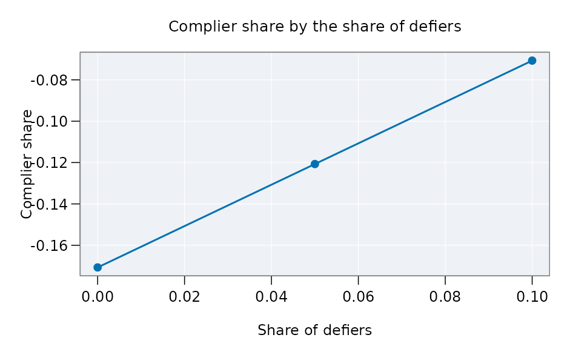
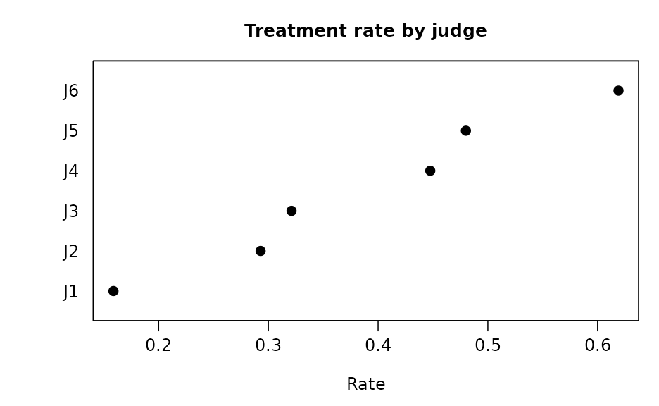
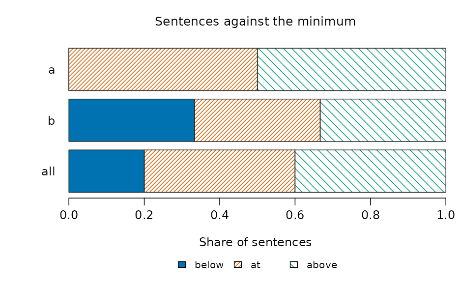
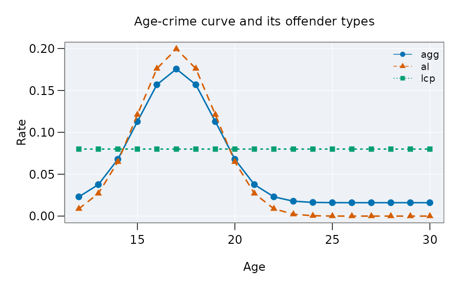
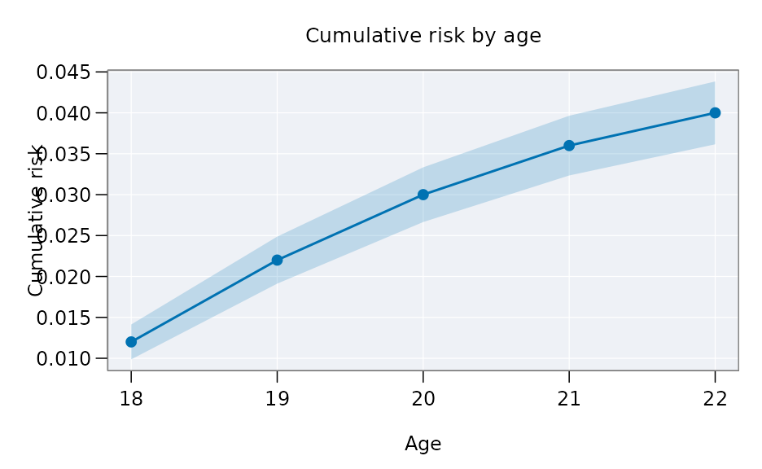
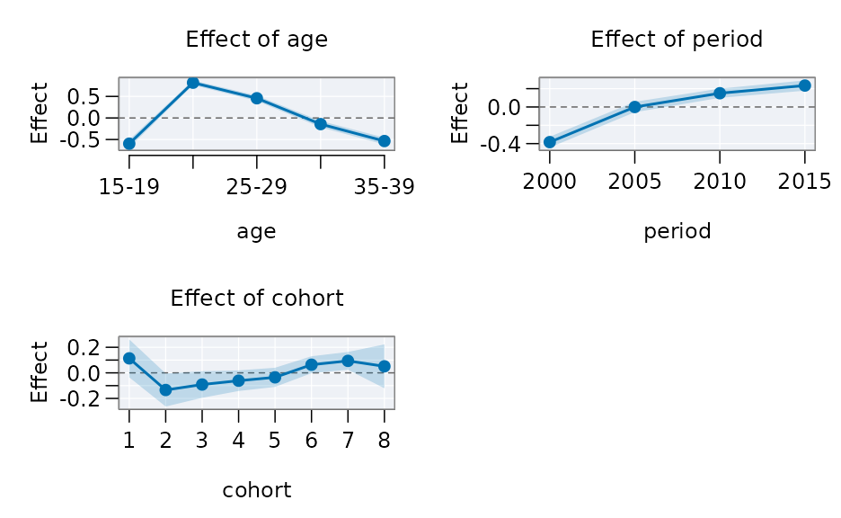
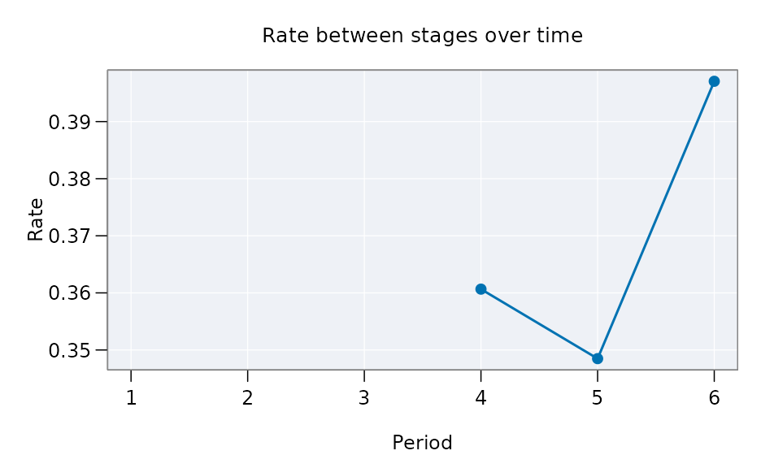

Courts, sentencing and the life course
Source:vignettes/courts-and-life-course.Rmd
courts-and-life-course.RmdJudge-leniency designs, sentencing models, the age-crime curve, cumulative risk and the justice pipeline.
Each section is one help page: what the function is for, the example
of its help page as it runs, and the plot of its result where the
package draws one. ?name gives the arguments and the value
in full.
Courts and sentencing
The judge-leniency instrument
jdgiv(): When cases are assigned to judges at random,
the judge’s leniency is an instrument for the decision (detention, a
custodial sentence): the difference in outcomes between lenient and
strict judges over the difference in decisions is the Wald ratio (Imbens
and Angrist 1994). It is the average effect on the compliers, the cases
whose decision depends on the judge, only if no case defies (is detained
by the lenient judge and released by the strict one). With a share of
defiers s whose effect is e, the compliers
number the first stage plus s and their effect is
(wald * fs + s * e) / (fs + s); sens gives it
over a grid, so a reader sees how far the conclusion rests on
monotonicity (de Chaisemartin 2017). Code z so that the
first stage is positive (1 for the judge whose decision is more often
1); with a negative one the complier share is negative and
ceff is NA.
set.seed(7)
z <- rbinom(1000, 1, 0.5)
d <- rbinom(1000, 1, ifelse(z == 1, 0.3, 0.5))
y <- rbinom(1000, 1, 0.2 + 0.1 * d)
jdgiv(z, d, y)
#> jdgiv: observed
#> fs itt wald
#> -0.17071258 0.01969084 -0.11534496
#> complier always never
#> -0.1707126 0.4723320 0.6983806
#> dsh deff cshare ceff
#> 0.00 0 -0.17071258 NA
#> 0.05 0 -0.12071258 NA
#> 0.10 0 -0.07071258 NA
Do judges’ leniency rankings hold? Monotonicity checks
jmono(): The decision rate of each judge (with a
chi-square test that the rate is the same for all, and its range), and
two checks of the monotonicity a judge-leniency design rests on.
set.seed(9)
j <- sample(paste0("J", 1:6), 1200, TRUE)
len <- c(J1 = 0.2, J2 = 0.3, J3 = 0.35, J4 = 0.4, J5 = 0.5, J6 = 0.6)
d <- rbinom(1200, 1, len[j])
g <- sample(c("adult", "youth"), 1200, TRUE)
r <- jmono(j, d, grp = g)
r$sub$summary
#> pairs reversed share signif refuted judges
#> 30.00000000 1.00000000 0.03333333 0.00000000 0.00000000 0.00000000
plot(r)
Sentences at, below and above a mandatory minimum
mmshr(): The shares of sentences at the mandatory
minimum, below it (where a court found a way around it) and above it,
and the mean excess of those above, overall and by group (offence,
court).
mmshr(c(365, 400, 300, 365, 730), 365, c("a", "a", "b", "b", "b"))
#> mmshr: sentences against the minimum
#> group n at below above mexcess
#> a 2 0.5000000 0.0000000 0.5000000 35
#> b 3 0.3333333 0.3333333 0.3333333 365
#> all 5 0.4000000 0.2000000 0.4000000 200
Credit for pre-sentence custody
pscred(): The credit a Canadian court gives for time
held in custody before sentence: each day held counts for at most one
day of the sentence (Criminal Code s. 719(3)) or, where the
circumstances justify it, for at most one and a half days (s. 719(3.1)).
With the sentence imposed, the time left to serve after the credit is
given too.
The generalised ordered logit
gologt(): An ordered outcome (a risk level, a charge’s
seriousness, a sentence band) regressed on covariates without forcing
each covariate to act the same way at every cut of the scale. For an
outcome with levels 1, …, M, each threshold j < M has
its own intercept and slopes, P(y > j) = F(a_j + x b_j) with
F the logistic distribution function (Peterson and Harrell
1990; Williams 2006, the parameterisation of ‘gologit2’); a covariate
named in par keeps one slope for all the thresholds, as in
the proportional-odds model, so that par = x is that model.
O’Connell and Laniyonu (2025) find racial disparity in a risk tool
concentrated at the low-to-medium cut and absent at the medium-to-high
one, which a proportional-odds fit averages away.
set.seed(7)
n <- 400
d <- data.frame(race = rbinom(n, 1, 0.4), age = rnorm(n))
e1 <- 0.5 + 0.8 * d$race - 0.5 * d$age
e2 <- -1 + 0.1 * d$race - 0.5 * d$age
u <- runif(n)
d$risk <- factor(1 + (u < plogis(e1)) + (u < plogis(e2)), 1:3,
c("low", "med", "high"))
r <- gologt(d, "risk", c("race", "age"), par = "age")
r
#> gologt: generalised ordered logit, 400 rows, 3 levels; log-likelihood -414.564
#> term thr est se z p lo
#> (Intercept) low|med 0.5549532 0.14198273 3.9085966 9.283381e-05 0.2766722
#> (Intercept) med|high -0.8280251 0.14776492 -5.6036652 2.098659e-08 -1.1176390
#> race low|med 0.5972905 0.22943154 2.6033496 9.231777e-03 0.1476129
#> race med|high -0.1312269 0.22560745 -0.5816604 5.607954e-01 -0.5734094
#> age all -0.5709891 0.09757872 -5.8515741 4.869423e-09 -0.7622399
#> hi
#> 0.8332342
#> -0.5384112
#> 1.0469681
#> 0.3109556
#> -0.3797383
#> against proportional odds: LR 8.875 on 1 df, p 0.00289The slopes of a generalised ordered logit by threshold
gocoef(): The coefficients of gologt() laid
out as a table: one row per threshold of the outcome, one column per
term, so that a covariate’s slopes can be read across the cuts of the
scale (a parallel covariate repeats its one slope), with their standard
errors and, for the free covariates, the Wald test that the slopes are
equal.
set.seed(8)
n <- 300
d <- data.frame(race = rbinom(n, 1, 0.4), age = rnorm(n))
u <- runif(n)
d$risk <- 1 + (u < plogis(0.5 + 0.8 * d$race)) +
(u < plogis(-1 + 0.1 * d$race - 0.3 * d$age))
gocoef(gologt(d, "risk", c("race", "age")), "race")
#> $est
#> race
#> 1|2 0.69848026
#> 2|3 -0.03629893
#>
#> $se
#> race
#> 1|2 0.2765599
#> 2|3 0.2509516
#>
#> $wald
#> term stat df p
#> 1 race 6.354064 1 0.01171127Life course and the justice pipeline
The age-crime curve of a mixture of offender types
agemix(): The aggregate age-crime curve is the
share-weighted mean of the curves of latent types (adolescence-limited,
life-course persistent, and so on), and one aggregate curve fits many
mixtures: the aggregate alone cannot tell one type from several (Moffitt
1993; Gottfredson and Hirschi 1990). What does tell them apart is the
covariance of an individual’s offending at two ages: with one type it is
0 (given the type, ages are independent), with several it is the
covariance across types of their curves at the two ages, which
cov gives for every pair of ages. With a panel of
individuals observed at two ages, the observed covariance and its
permutation test say whether one type is enough. See
proof("agemix").
ages <- 12:30
al <- dnorm(ages, 17, 2)
lcp <- rep(0.08, length(ages))
r <- agemix(cbind(al = al, lcp = lcp), c(0.8, 0.2), ages)
r$cov["15", "25"]
#> [1] -0.0005241738
plot(r)
Cumulative risk of a first event by age
cumrsk(): The share of a birth cohort that has had a
first arrest, conviction or prison admission by each age, from first
events by age and the population: the hazard at each age is the first
events over those still without one, and the cumulative risk is one
minus the product of the complements, with Greenwood’s interval on the
log scale of the survival (Bonczar 2003; Pettit and Western 2004). With
death rates the first events count only among the cohort still alive,
and no interval is given.
cumrsk(18:22, c(120, 100, 80, 60, 40), rep(10000, 5))
#> cumrsk: cumulative risk of a first event by age
#> age hazard atrisk cumrisk lo hi
#> 18 0.012000000 10000 0.012 0.009863582 0.01413181
#> 19 0.010121457 9880 0.022 0.019120830 0.02487072
#> 20 0.008179959 9780 0.030 0.026650783 0.03333769
#> 21 0.006185567 9700 0.036 0.032341858 0.03964431
#> 22 0.004149378 9640 0.040 0.036151577 0.04383306
Age-period-cohort model by the intrinsic estimator
apcie(): Asks how much of the change in a rate (arrests,
imprisonment, victimisation per head) over the years belongs to age, to
the period and to the generation (cohort) people were born into. From a
table of counts by age group (rows) and period (columns), with equal
widths, and the population at risk in each cell, the Poisson log-linear
model
# arrests by five-year age group (rows) and five-year period (columns)
set.seed(11)
ag <- c(-1, 0.5, 0.2, -0.3, -0.6)
pe <- c(-0.2, 0, 0.1, 0.1)
co <- seq(-0.4, 0.4, length.out = 8)
ck <- outer(1:5, 1:4, function(i, j) j - i + 5)
eta <- outer(ag, pe, "+") + matrix(co[ck], 5)
pop <- matrix(1e5, 5, 4)
y <- matrix(rpois(20, pop * exp(-6 + eta)), 5,
dimnames = list(c("15-19", "20-24", "25-29", "30-34", "35-39"),
c(2000, 2005, 2010, 2015)))
apcie(y, pop)
#> apcie: 5 ages, 4 periods, 8 cohorts; deviance 7.1182 on 6 df
#> term level est se lo hi
#> (Intercept) -6.2524461958 0.02235638 -6.296263896 -6.208628495
#> age 15-19 -0.5967910284 0.04565097 -0.686265286 -0.507316770
#> age 20-24 0.8181347740 0.02738804 0.764455203 0.871814345
#> age 25-29 0.4571013806 0.03144387 0.395472536 0.518730225
#> age 30-34 -0.1427156034 0.03780542 -0.216812864 -0.068618343
#> age 35-39 -0.5357295228 0.04059046 -0.615285353 -0.456173692
#> period 2000 -0.3837793842 0.03014061 -0.442853889 -0.324704880
#> period 2005 -0.0003931638 0.02913733 -0.057501287 0.056714960
#> period 2010 0.1501259914 0.02581925 0.099521189 0.200730794
#> period 2015 0.2340465566 0.02873443 0.177728103 0.290365010
#> cohort 1 0.1133769341 0.07568888 -0.034970536 0.261724405
#> cohort 2 -0.1340621684 0.06597129 -0.263363521 -0.004760816
#> cohort 3 -0.0913148531 0.05301973 -0.195231623 0.012601917
#> cohort 4 -0.0613495318 0.04112454 -0.141952150 0.019253087
#> cohort 5 -0.0350107914 0.03827002 -0.110018660 0.039997077
#> cohort 6 0.0636191215 0.03380790 -0.002643152 0.129881395
#> cohort 7 0.0937161963 0.03550707 0.024123611 0.163308782
#> cohort 8 0.0510250929 0.08760061 -0.120668942 0.222719128
Rates between stages of the justice pipeline
jpipe(): Cases moving from one stage to the next
(charges to convictions, admissions to releases) take time, so a rate of
this period’s outflow over this period’s inflow mixes cohorts.
jpipe() divides the numerator summed over a window by the
denominator summed over the same window moved back by the lag between
the stages.
jpipe(num = c(5, 7, 6, 9, 8, 10), den = c(20, 22, 19, 25, 24, 26),
win = 3, lag = 1)
#> jpipe: lagged rates between stages
#> group index num den rate
#> all 1 NA NA NA
#> all 2 NA NA NA
#> all 3 18 NA NA
#> all 4 22 61 0.3606557
#> all 5 23 66 0.3484848
#> all 6 27 68 0.3970588
res <- jpipe(num = c(5, 7, 6, 9, 8, 10), den = c(20, 22, 19, 25, 24, 26),
win = 3, lag = 1)
plot(res)
Group-based trajectory model for counts
zgll(), zgem(): The finite mixture of Nagin
(1999) for counts over time, zero-inflated Poisson within groups
(Lambert 1992; Nielsen et al. 2014): unit i belongs to
group k with probability prob[k]; given
k, its counts are independent Poisson with log mean off +
x_t’ beta_k and, when z is given, zero with extra
probability plogis(z_t’ gamma_k). zgll() evaluates the
log-likelihood and the posterior memberships; zgem() fits
by a generalised EM from the values given (the log-likelihood never
decreases). One start per call: the model has local maxima, so several
starts are the caller’s loop, and the number of groups is the caller’s
choice (compare the log-likelihoods with a penalty such as BIC).
Group-based multivariate trajectories
mvtll(), mvtem(): The group-based
trajectory model with several normal indicators per unit (Nagin 1999;
Magrini 2022): given group k, the r indicators
of a unit at period t are multivariate normal with mean
B_k’ x_t and covariance S_k, independently over periods.
mvtll() evaluates the log-likelihood and posterior
memberships; mvtem() fits by EM with closed-form steps from
the values given. A period with any missing indicator is left out for
that unit.